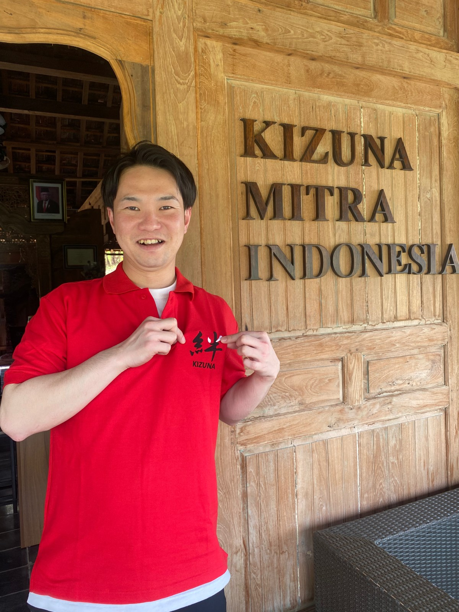

2018年以来、何百人もの卒業生を日本へ送り出してきた公認機関、LPK Kizuna Mitra Indonesiaについて詳しくご紹介します。

LPK Kizuna Mitra Indonesiaは、2018年よりインドネシアのスマランで活動している、日本への派遣・教育を専門とする公認の職業訓練校（LPK）です。日本語教育、就業態度の育成、専門スキルの習得に重点を置き、参加者が安全かつ合法的に、そして明確な目標を持って日本の技能実習や就労プログラムに進めるようサポートしています。集中トレーニングシステムとプロフェッショナルな伴走支援により、国際的なキャリア、グローバルな実務経験、そして日本でのより良い未来を目指す多くの候補者に選ばれています。
LPK Kizuna Mitra Indonesia は、2018年4月に中部ジャワ州スマランで設立された公認の職業訓練校です。日本での技能実習経験を持つ卒業生たちが、インドネシアの若者たちに実質的なチャンスを提供したいという想いから設立されました。Kizunaは、日本での就職成功に向け、ゼロから皆様のキャリアをサポートする信頼できるパートナーです。
インドネシア労働省の認可を受け、中部ジャワ州労働局（LA LPK）の認定も取得しており、これまでに300名以上の卒業生を日本各地へ送り出してきました。体系的なトレーニング方法、経験豊富な講師陣、そして20社以上の日本企業とのネットワークにより、Kizunaは皆様を次のステージへと導きます。
Kizunaでの学習は、単にひらがなやカタカナを覚えるだけではありません。参加者同士が互いに支え合い、温かく活気に満ちた環境作りを大切にしています。また、ボランティアや日本からの学生が訪れ、直接経験を共有する機会も少なくありません。
私たちの学習メソッドには、日常会話の練習、面接シミュレーション、体力トレーニング、そして日本のリアルな企業文化の理解が含まれています。これにより、日本に到着した際に精神面でもプロフェッショナルとしても準備が整った状態を目指します。
私たちは単なる教育機関ではなく、皆様の日本でのキャリアを最初から成功までサポートするパートナーです。
インドネシア労働省の認可および中部ジャワ州労働局の認定。JITCOに登録され、日本企業と直接提携しています。
講師陣は日本での技能実習経験者。理論だけでなく、現場で本当に必要な知識を理解しています。
すべての費用を事前に明確にご説明します。隠れた費用はありません。透明性の高いプロセスをお約束します。
登録、トレーニング、面接、ビザ申請、そして出国まで、すべてのステップに同行しサポートします。
優れた、プロフェッショナルで信頼される職業訓練校として、国際レベル、特に日本への技能実習分野で競争できる人材を育成することを目指します。